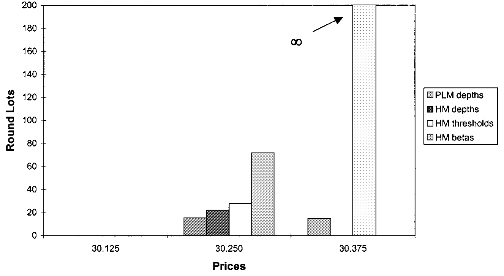
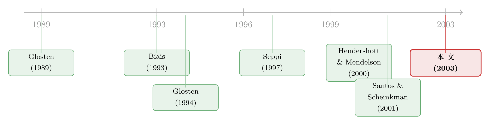

两个交易所抢同一笔单子，谁能活下来，竟系于一条「平局怎么算」的规矩
本文读的是 Parlour & Seppi (2003, Review of Financial Studies)：当一个纯限价订单市场（如 Island）和一个有专家做市的混合市场（如 NYSE）为同一只股票的订单流竞争时，并不存在一个「天生不败」的市场结构。纯限价市场固然总能作为主导市场存在，但混合市场在某些参数下同样能胜出，两者还可能并存。真正决定生死的，竟是一条看似无关痛痒的「平局规则」——当投资者把单子拆到哪个市场都一样划算时，他默认往哪儿送。
1 一个本不该有答案的问题
世纪之交的美国股市，正经历一场喧嚣的「交易所内战」。一边是百年老店纽约证券交易所（NYSE），靠专家（specialist）和场内交易池撑着流动性；另一边是 Island、Instinet 这类电子撮合网络（ECN），没有做市商，只有一本公开的限价订单簿，谁挂单谁就提供流动性。同一只在多地挂牌（cross-listed）的股票，订单流被这些场所撕扯着抢来抢去。
于是一个很自然的问题浮出水面：流动性，到底会不会「自然而然」地汇聚到一个市场里去？ 如果会，那么眼下这场混战不过是通往某个新的中心化交易格局的过渡；如果不会，那么分散（fragmentation）就会一直存在——而这又引出政策上的追问：碎掉的订单流，是好事还是坏事？
在 Parlour 和 Seppi 动笔之前，这个问题其实已经有了一个相当「漂亮」的答案。Glosten (1994) 证明过一个很强的命题：电子化的公开限价订单簿是不可避免的（inevitable）。他的逻辑是，纯限价订单市场（pure limit order market，下称 PLM）是抗竞争的（competition-proof）——任何想来分一杯羹的对手市场，在与一个均衡状态下的限价订单簿竞争时，都只能赚到负的期望利润。换句话说，PLM 一旦立住，别人就没法靠提供更好的流动性把它挤垮。
如果 Glosten 是对的，那 NYSE 这种带专家的混合结构迟早要被电子限价簿淘汰，故事就讲完了。
但本文要做的，恰恰是把这个「讲完了」的故事重新撬开。
2 真正关键的一步：两种流动性，差在一个「时点」
撬开它的撬棍，是一个听上去很技术、却极其要紧的区分：限价订单和专家，提供流动性的「时点」不一样。
先说限价订单。无论是在纯市场还是混合市场，挂出一张限价单，都是一种事前（ex ante）的承诺：你在市场订单还没来、不知道会不会来、不知道来多大的时候，就把愿意成交的价格和数量摆在了桌上。这是一种「先许诺、后兑现」的流动性。许诺是有代价的——你的限价单可能被未来携带信息的大单「捡漏」（picked off），所以本文给每张挂在价格 \(p_j\) 的限价单都按上一笔事前提交成本 \(c_j\)。
再说专家。专家提供的是事后（ex post）的流动性：他要等市价单 \(B^h\) 真的到了、看清了实际规模，才出手做价格改善（price improvement），把市场清算掉。
一句话点透全文的题眼：PLM 只有「事前」这一种流动性供给；混合市场（hybrid market，下称 HM）则同时拥有「事前的限价单」和「事后的专家」两种。 多出来的这只「事后的手」，既是 HM 的武器，也是它麻烦的根源。
正是这个时点差，让 PLM 与 HM 的竞争不再是 Glosten 笔下那个一边倒的结局。Parlour-Seppi 把 Seppi (1997) 的单市场限价订单模型扩展成一个两市场竞争的版本，让流动性的供给（限价单、专家、交易池）和需求（市价单）在两个交易所里同时内生地决定，再把订单流的去向交给一个会算账的主动交易者（active trader）。
3 模型：一场分三幕的流动性供给博弈
整个模型是一个单期（single-period）博弈，时间线分三幕（论文 Figure 1）。所有流动性提供者对股票有一个共同估值 \(v\)，价格落在一张离散网格 \(\Lambda=\{\dots,p_{-1},p_1,p_2,\dots\}\) 上，按相对 \(v\) 的序号标注。
第一幕（时间 1）：价值交易者挂限价单。 一群个体微不足道、风险中性的价值交易者（value traders）以伯川德（Bertrand）方式竞争，在两个市场的订单簿里挂限价单——直到挂单的边际期望利润被竞争压到零为止。
第二幕（时间 2）：主动交易者下市价单。 一位主动交易者到来，要买卖 \(x\) 股（随机、外生），以概率 \(\phi\) 买、以 \(1-\phi\) 卖。她可以把订单拆到两个市场去（order splitting，沿用 Bernhardt & Hughson (1997) 的设定）：送 \(B^h\) 股去混合市场，\(B^p=x-B^h\) 股去纯市场。
第三幕（时间 3）：交易池与专家清场。 一个被动的交易池（trading crowd，处理成本为每股 \(r\) 的潜在做市商群体）随时准备在任一市场只要价格高于 \(v+r\) 就卖出；此外，混合市场上还有一位拥有成本优势（处理/库存成本为零）的专家，做最后的事后价格改善。
3.1 主动交易者：把成本最小化
主动交易者面对两条流动性供给曲线 \(T^h\)（混合市场买 \(B^h\) 股的成本，即超出 \(vB^h\) 的那部分溢价）和 \(T^p\)（纯市场对应的成本），求解：
$$\min_{B^h,\,B^p\ \text{s.t.}\ B^h+B^p=x}\ T^h(B^h)+T^p(B^p)$$
她的最优拆单，本质是在「拉平两个限价簿的边际价格」和「避开专家定价里的跳跃」之间做权衡。这里埋着本文第一个关键概念：当某个拆单方案不唯一、几种拆法成本完全一样时，怎么办？ 她需要一条平局规则来打破僵局——这就是后面要反复出现的 订单偏好（order preferencing）。
（限价订单簿如何作为一座「流动性的集市」运转、价差又为何会自我修复，可参见《买卖价差为什么会「自己长回去」？》；而投资者为何宁愿把单子送去看似更差的市场，则与《为什么有人偏要去「更差」的市场交易？》同根同源。）
3.2 专家：本文的核心方程
混合市场的灵魂是专家。当市价买单 \(B^h\) 到达，他选一个清算价（cleanup price）\(p^h\)，在先执行掉所有具有优先权的限价单之后，用自己的账户把剩下的市场清掉。他要解的，是本文最该被讲透的一个方程：
$$\max_{v 它长这样，每一块都有讲究： 这个方程里藏着一个漂亮的取舍：清算价 \(p\) 定得越高，赚的每股溢价 \((p-v)\) 越大，但根据价格优先权，有优先权、要先于他成交的限价单 \(\sum_{p_i\le p}S_i^h\) 也越多，于是他自己能卖出的份额反而越少。 上界为什么是 \(p_{max-1}\)（即 \(p_{max}\) 下方一格）？因为专家还必须压过交易池——交易池在 \(p>v+r\) 时就会进场，所以专家最多只能要到比交易池保留价低一格的位置，才能「抢」到这单生意。 由 Seppi (1997) 命题 1 可知，专家的最优定价 \(p^h(B^h)\) 关于订单规模 \(B^h\) 是单调的，于是可以用一串执行门槛（execution thresholds）来刻画： $$\theta_j^h=\max\{B^h:\ p^h(B^h) 直觉上，\(\theta_j^h\) 就是「能让专家愿意在 \(p_{j-1}\) 清场、而不动到 \(p_j\) 那一档限价单」的最大市价单。订单一旦大过 \(\theta_j^h\)，专家就得清到 \(p_j\) 或更高，价格 \(p_j\) 以上的那些限价卖单才会被触发执行。 有了专家的门槛，价值交易者挂单的账就能算了。在混合市场，挂在 \(p_1\) 和更高 \(p_j\) 的限价卖单，其边际期望利润为 $$e_1^h=\phi\Pr(B^h\ge S_1^h)(p_1-v)-c_1$$
$$e_j^h=\phi\Pr(B^h>\theta_j^h)(p_j-v)-c_j$$ 而在纯市场，扮演专家门槛角色的，是累计深度 \(Q_j^p\) 本身——市价单只有大到够得着第 \(j\) 档，那一档的限价单才成交： $$e_j^p=\phi\Pr(B^p\ge Q_j^p)(p_j-v)-c_j$$ 伯川德竞争把这些边际利润压到零，订单簿的均衡深度就这么定下来了。注意两市场的对称之处：纯市场里的「累计深度 \(Q_j^p\)」和混合市场里的「执行门槛 \(\theta_j^h\)」，在数学上扮演着同一个角色——都是触发某一档价格成交所需的「订单规模门槛」。差别只在于，混合市场的门槛是由那只事后的手（专家）内生地撑起来的。 把三幕拼起来求均衡，Glosten 那个干净的结论就碎了。 Parlour-Seppi 的第一个、也是最重要的结论是：纯限价市场和混合市场，谁都不是排他地抗竞争的。 具体而言—— 为什么 Glosten 漏掉了后两种？因为他默认流动性提供者是同质的。一旦允许流动性提供者有异质的成本（heterogeneous costs）——这正是「专家比交易池成本低、限价单又有事前提交成本」的题中之义——多重均衡（multiple equilibria）就冒出来了。 而真正把读者钉在椅子上的，是到底哪一个均衡会实现这件事的答案： 选中哪个均衡，取决于那条看似无关痛痒的订单偏好（order preferencing）规则——当主动交易者把单子拆到哪个市场成本都一样、即「平局」时，她默认往哪儿送。这条「平局怎么算」的规矩，竟成了一个交易所能不能活下来的命门。 这就是为什么 Nasdaq 上经纪商「只要别人匹配了最优报价，就能把单子导给自己中意的交易商（从而绕开时间优先权）」会被批评为潜在的合谋，也是为什么 NYSE 对零售经纪商把客户单子导去地区市场耿耿于怀。本文等于给这些争论盖了个理论戳：关于订单偏好的担忧，是有充分根据的——因为「平局规则」在均衡选择里举足轻重。（关于订单偏好与 Nasdaq 市场质量的实证，可参见《order-preferencing-and-market-quality-on-nasdaq》；而「为订单流付费」这门生意的另一面，见《为你的订单付钱，结果你却付了更多》。） 下面这张图给出了一个数值算例下两个市场的限价订单簿与专家的执行门槛，正好把上面这套「门槛—深度」的均衡结构画了出来。  Figure 8: gives the limit order books and thresholds for the numerical 第二个结论，颠覆了一个朴素直觉：交易所之间的竞争——无论是新市场开张，还是公司去多地挂牌——既可能降低、也可能抬高总的流动性成本。 这一点反直觉到值得停一下。我们总以为「多一个竞争者，价格就会被压低」。但在流动性供给这门生意里，事前的限价单是要付提交成本 \(c_j\) 的。竞争把订单流切碎之后，每个市场里某一档价格被成交的概率 \(\Pr(B^h>\theta_j^h)\) 变了，价值交易者愿意挂出的深度随之改变——结果可能是两边的簿子都变薄，流动性反而更贵。竞争究竟是福是祸，取决于订单流如何被分配，而这又回到了那条平局规则上。 第三个结论，则给了监管者一个具体的抓手：「最优执行」（best execution）法规——把跨市场的价差限制在一个最小价位（one tick）之内——会大大改善混合市场相对纯限价市场的竞争生存力。 也就是说，强制两个市场的价格不能差太远，等于给了带专家的 HM 一条活路。这把「市场结构」和「监管规则」直接焊在了一起：你想让哪种交易所活下去，可以通过设计跨市场的价格联动规则来实现。 把这条线索捋一捋，会看到一段「从单一市场设计，走向多市场竞争」的演进。 最早，研究是监管视角的——给定只有一个市场，比较不同结构的优劣。Glosten (1989) 指出垄断式做市在极端逆向选择下比竞争性做市更稳健；Madhavan (1992) 发现连续市场会关门时，周期性的批量市场反而能活；Biais (1993) 则证明中心化市场（交易所）的价差比碎片化市场（如 OTC 电话市场）更波动。 接着，限价订单本身被搬上了均衡的舞台：Cohen et al. (1981) 描述了限价单与买卖价差的存在性，Glosten (1994) 给出了「电子公开限价簿不可避免、且抗竞争」的强命题，而 Seppi (1997) ——本文的直接前身——把限价单与一个策略性专家放进同一个单市场模型，刻画了两种流动性供给的此消彼长。  然后，竞争开始进入多市场的世界：Hendershott & Mendelson (2000) 模型化了撮合网络与做市商市场之间的竞争，Santos & Scheinkman (2001) 研究交易所在保证金要求上的竞争，Foucault & Parlour (2000) 则看挂牌费的竞争。Glosten (1998) 进一步研究了多个纯限价市场在不同优先权规则下的竞争——这与本文最为接近。 而本文（Parlour & Seppi, 2003）所处的位置，是把 Seppi (1997) 的单市场结构升格为两种异质结构（PLM vs HM）的正面竞争，并第一次把「订单偏好」从一个被忽略的技术细节，提升为决定市场存亡的均衡选择机制。 Q：这篇文章和 Glosten (1994) 到底分歧在哪？是不是只是「换了个假设」？ 分歧的根子在「流动性提供者是否同质」。Glosten 在同质成本下得到 PLM 抗竞争的强结论；本文一旦放进异质成本（专家成本低于交易池、限价单有事前提交成本 \(c_j\)），就出现多重均衡，HM 也能主导、两市场也能并存。所以不是简单换假设，而是指出 Glosten 的结论对「同质性」这个不起眼的前提高度敏感。 Q：「订单偏好」听起来就是个打破平局的小规矩，凭什么能决定一个交易所的生死？ 因为它作用在「主动交易者拆单成本恰好相等」的临界点上。在这些临界点，订单往哪边送是无差异的（对她而言），却会改变各市场某档价格被触达的概率，进而改变价值交易者愿意挂的深度，最终把系统推向不同的均衡。一个对个体无关痛痒的选择，经由均衡放大成了对市场结构生死攸关的力量——这正是多重均衡里「均衡选择」的典型威力。 Q：模型里专家有「成本优势」又有「时点优势」，是不是被设定得过于强大、胜之不武？ 两种优势对应两件真实的事：时点优势＝事后才出手，不必像限价单那样事前承诺、承担被捡漏的风险；成本优势＝他不过是当下处理/库存成本最低的那个做市商。而且本文给专家套了硬约束：他必须遵守价格、时间、公开优先权，要自己成交就得同时压过剩余限价簿和交易池，且不能用事后时间不一致的承诺去影响主动交易者的拆单。所以他强，但不是无法无天。 Q：为什么「竞争反而可能让流动性更贵」？这不违反基本的竞争直觉吗？ 关键在于事前提交成本。限价单是要花 \(c_j\) 才挂得出来的承诺，挂多少取决于被成交的概率。竞争把订单流切碎后，单个市场里每档价格被触达的概率下降，价值交易者就不愿挂那么深，两边的簿子可能一起变薄。竞争压低的是「垄断租金」，但它同时也稀释了「成交概率」，后者一旦占上风，总流动性成本就上升了。 Q：「best execution 限制在 one tick 内」为什么偏偏帮的是混合市场？ 因为专家的武器是事后价格改善，而他的定价是离散跳跃的（在执行门槛 \(\theta_j^h\) 处从一档跳到下一档）。如果允许两市场价格差得很远，纯市场可以靠连续逼近的限价簿在某些订单规模上甩开专家；一旦法规强制价差不超过一个最小价位，专家的离散定价劣势被「夹」住了，他事后改善的优势就更容易兑现，HM 的生存力随之改善。 Q：这是个单期模型，没有信息不对称（\(v\) 是常数），会不会把最要紧的东西抽掉了？ 作者是有意为之——把 \(v\) 取成常数，是为了剥离市场的价格发现/信息聚合功能，专注于流动性供给这一个角色（这是价格的暂时性成分，而非永久性成分）。代价是：逆向选择、知情交易这些微观结构里的大头被排除在外。所以本文的结论应理解为「在纯流动性竞争的维度上」成立；叠加信息不对称后会不会改写均衡选择，是公开的问题。 1. 把「订单偏好」搬到公司债的电子化竞争里。
【经济故事】公司债市场正从电话询价（RFQ）走向电子化的全或部分限价簿，多个平台（如 MarketAxess、Tradeweb 及各类 ATS）为同一只债的订单流竞争，交易商网络又呈核心—边缘结构。本文的「平局规则决定生死」在这里有直接对应：交易商把客户的 RFQ 默认导给谁，可能就是债市版的 order preferencing。
【可行性】中。需要 TRACE 加上带平台标识的成交/报价数据（部分可得，平台层面的撮合数据较难拿全）。识别上可借助某平台规则变更或新平台进入做事件研究，但「平局」这一临界状态在数据里难以直接观测，是主要障碍。 2. 外资持有人与跨市场（跨境）订单流竞争。
【经济故事】同一家公司在本土与海外（如美国 ADR）双重挂牌，外资与本土投资者的拆单行为会把流动性在两地之间分配。本文预测「竞争可能恶化总流动性」，那么跨境挂牌究竟是把流动性做大了还是切碎了？外资比例的高低会不会改变均衡选择？
【可行性】中高。跨境挂牌＋两地高频成交数据相对可得，外资持股比例（如 KOSPI、台股的可投资度）可作为横截面变异。可与本博客已覆盖的《把股票挂到美国去，交易真的会跟过去吗？》对话。识别难点是挂牌决策的内生性。 3. 把模型从单期推到动态，检验均衡的「自我实现」。
【经济故事】本文是单期的，多重均衡靠平局规则外生选中。但现实中订单流的去向有惯性（流动性吸引流动性）。一个动态版本能回答：某个平局规则一旦被市场采用，会不会通过「深度—概率」的正反馈把自己锁定成长期均衡？
【可行性】低到中。纯理论扩展 doable，但要把执行门槛 \(\theta_j^h\) 的离散跳跃放进多期会大幅增加求解难度；实证检验「锁定」则需要长样本的市场份额迁移数据。 4. one-tick best-execution 规则的福利再评估。
【经济故事】本文给出「限制跨市场价差到一个 tick 能救混合市场」的理论结论。Reg NMS 的 Order Protection Rule 恰好是这类规则的现实版本。它到底是改善了总福利，还是只是把租金在专家、限价单提供者与投资者之间重新分了一次？
【可行性】高。可借十进制化（decimalization）、tick size pilot 等多次最小价位/价格联动规则变更做准自然实验，配 TAQ 数据估计有效价差与深度的变化，把模型的福利比较直接拿到数据里对账。 这是一篇「以小博大」的理论文章。它最大的贡献，是把一个被前人当作技术细节、甚至被监管者当作合谋嫌疑而想一禁了之的东西——订单偏好——提升为决定市场结构存亡的核心机制，并由此推翻了 Glosten (1994)「电子限价簿不可避免」的强命题。它告诉我们：市场结构的竞争没有一个干净的赢家，结局对「平局怎么算」这种制度细节极度敏感。这个洞见，在今天 Reg NMS、暗池（dark pool）林立、订单流付费屡遭质疑的世界里，反而比 2003 年更有现实分量。 但对识别（这里指模型的说服力），我有两点保留。其一，常数 \(v\) 抽掉了信息不对称，而真实订单流竞争里「谁更怕被知情交易者捡漏」往往是市场份额迁移的主因；本文的结论严格说只在「纯流动性竞争」这一维度上成立。其二，多重均衡是一把双刃剑：它解释力强，却也意味着模型对「会发生什么」给不出唯一预测——一切系于那条外生给定的平局规则。这既是洞见，也是软肋。 后续我最想看到的，是把这套框架放进公司债与信用市场：那里平台竞争正烈、交易商网络的核心—边缘结构明显、「把 RFQ 导给谁」几乎就是债市版的订单偏好。如果能在那里找到一次干净的规则变更，把「平局规则改变 → 流动性重新分配」这条因果链落到数据上，本文的理论洞见就能第一次被真正地检验。3.3 价值交易者：把利润竞争到零
4 于是反转出现：没有谁是「天生不败」的
5 竞争，未必让流动性更便宜
6 文献脉络
7 评论与延伸（Q&A + 研究方向）
(a) 几个可能的疑问
(b) 几个可能的研究问题与提案
8 我的判断
参考文献